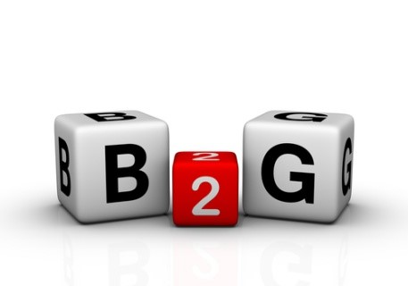

Business-to-government
B2G es la abreviatura de Business to Government y consiste en optimizar los procesos de negociación entre empresas y el gobierno a través del uso de Internet, a partir de transacciones electrónicas En general, B2G en su definición incluye cualquier tipo de relación comercial entre las autoridades y las empresas a través del uso de Internet. Este modelo de comercio electrónico cubre cualquier tipo de relación comercial, proceso o comunicación entre ambas como, por ejemplo, licitaciones públicas, ayudas o subvenciones, financiación de empresas, fiscalidad, etc. Con el fin de simplificar los procesos tanto para las empresas como para las autoridades públicas, la comunicación en B2G se realiza, sobre todo, de forma online. Para las empresas, la rápida tramitación de las solicitudes es especialmente atractiva y promete una mayor eficacia. Por ejemplo, se puede hacer una descarga directa de los formularios o transferir los importes de los impuestos. La cooperación en el área B2G suele estar diseñada para un período de tiempo largo y se caracteriza por un alto volumen de pedidos. Por ello, es indispensable una comunicación rápida y sin complicaciones entre ambas partes de la relación comercial. Hay puntos de partida muy diferentes en el área de B2G. Las empresas y las autoridades interactúan entre sí por razones muy diferentes. A veces se trata de relaciones comerciales, a veces de procesos formales y a veces de encontrar nuevos empleados. Cada escenario depende, por supuesto, del tipo de administración pública. Compra de productos y servicios La forma clásica de una relación comercial es la compra de productos o servicios. Las autoridades públicas suelen hacer uso de las ofertas de las empresas privadas. Sobre todo, existe una gran demanda de soluciones tecnológicas, por ejemplo, para poder asegurar las grandes cantidades de datos que procesan las administraciones gubernamentales. Un ejemplo seria NEGOCIO A GOBIERNO – BUSINESS TO GOVERNMENT La B2G es la relación de negocios por internet entre gobierno y empresas. Por ejemplo: las compras por el Estado a través de la internet por medio de pregones y licitaciones, toma de precios, etc. Consiste en la venta en línea de productos y servicios al gobierno. A lo cual podemos entonces decir La B2G es la relación de negocios por internet entre gobierno y empresas. Por ejemplo: las compras por el Estado a través de la internet por medio de pregones y licitaciones, toma de precios, etc.